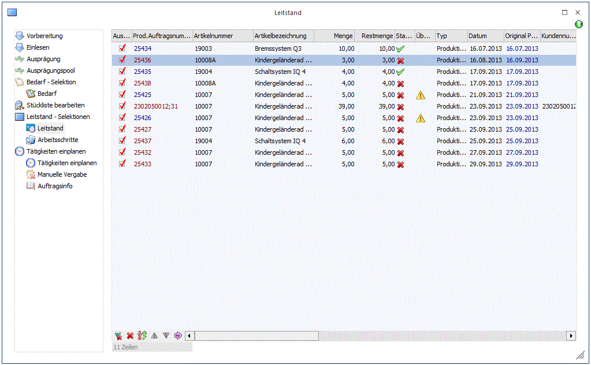
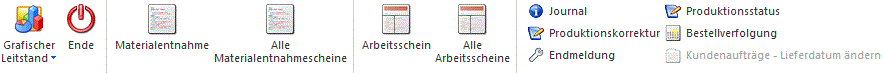
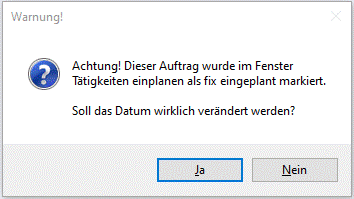
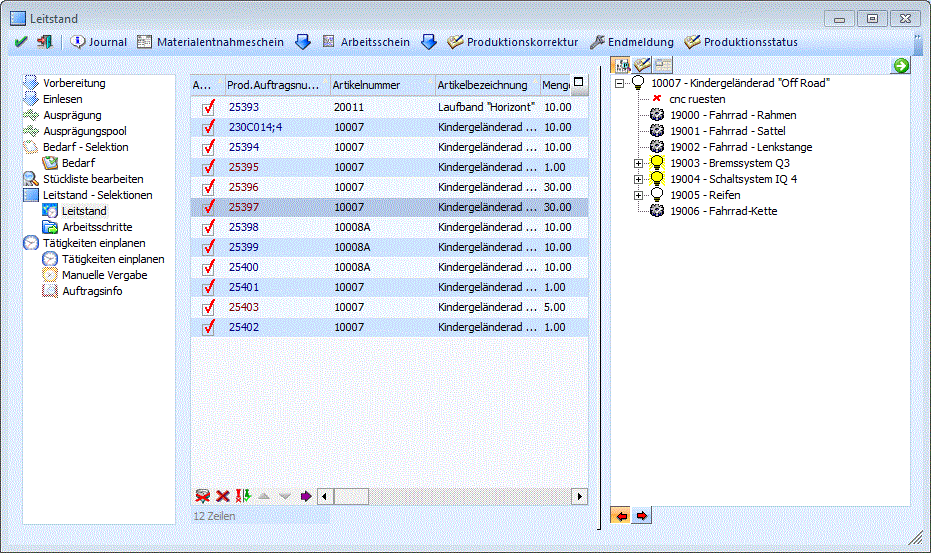
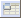
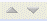
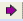

Hier werden alle Projekte lt. Auswahl angezeigt, wobei die Sortierung nach der Priorität gelistet werden - Projekte mit der höchsten Prioritätsnummer werden zuerst gelistet. Sollte der angemeldete Benutzer keine Berechtigung für das Projekt haben (Einstellung im Stücklistenstamm bzw. im Arbeitsschrittstatus) wird ihm das Projekt auch nicht angezeigt.

Buttons

Ø Journal
Ausgabe der Produktionsinformationsliste.
Ø Materialentnahme
Ausgabe des Materialentnahmescheins für den aktuell in der Tabelle markierten Arbeitsschritt bzw. den obersten Arbeitsschritt des markierten Produktionsauftrages.
Ø Alle Materialentnahmescheine
Ausgabe des Materialentnahmescheins für alle Arbeitsschritte, die in der Tabelle ausgewählt sind (Checkbox "Auswahl"), bzw. für alle Arbeitsschritte in den ausgewählten Produktionsaufträgen.
Ø Arbeitsschein
Ausgabe des Arbeitsscheins für den aktuell in der Tabelle markierten Arbeitsschritt bzw. den obersten Arbeitsschritt des markierten Arbeitsschrittes.
Ø Alle Arbeitsscheine
Ausgabe des Arbeitsscheins für alle Arbeitsschritte, die in der Tabelle ausgewählt sind (Checkbox "Auswahl"), bzw. für alle Arbeitsschritte in den ausgewählten Produktionsaufträgen.
Ø Produktionskorrektur
Aufruf des Fenster "Stückliste bearbeiten" zur Produktionskorrektur.
Ø Endmeldung
Aufruf der Produktionsendmeldung für den aktiven Produktionsauftrag.
Ø Arbeitsschrittstatus
Aufruf des Menüpunktes "Arbeitsschrittstatus" um den Status des aktiven Projektes ausgeben zu können.
Ø Bestellverfolgung
Durch Anklicken dieses Buttons wird für markierten Produktionsauftrag in der Tabelle die Auswertung "Auftragsverfolgung" aufgerufen werden. Mit dieser Auswertung können die Verknüpfungen zu Kundenaufträgen, Lieferbestellungen und andere Produktionsaufträgen in Verbindung mit diesem Produktionsauftrag ausgewertet werden.
Ø Kundenaufträge Lieferdatum ändern
Dieser Button ist nur verfügbar wenn der Artikel als "Artikel mit Reservierung" bzw. "auftragsbezogene Produktion/Bestellung" geschlüsselt ist. Zusätzlich muss die Option "Reservierungen verwenden" in den FAKT-Applikationsparameter aktiviert sein. Durch Anwählen des Buttons gelangt man in das Fenster "Lieferdatum ändern" zur Bearbeitung der Beleg-Lieferdatümer.
Ø Grafischen Leitstand/Tätigkeiten einplanen
Nach Drücken von einer der Button-Optionen werden jene Projekte, bei denen die Checkbox "Auswahl" aktiviert wurde in das Fenster Produktionsauftrag bearbeiten übernommen und können dort neu reserviert werden bzw. in den grafischen Leitstand geladen. Wurde in den PROD Parametern eingestellt, dass vorher die Verfügbarkeit der Komponenten geprüft werden soll, so kommt man zuvor noch in den Bedarf (dieser kann auch manuell aufgerufen werden).
Ø Ende
Der Programmbereich wird verlassen und die Neukalkulation der Projekte wird abgebrochen.
Folgende Informationsfelder geben genauere Auskunft über das Projekt, bzw. folgende Eingabefelder können bearbeitet werden.
Ø Auswahl
Mit der Checkbox kann der Bearbeiter steuern, ob er das Projekt neu berechnen will, d.h. ob er versuchen will für das Projekt Ressourcen zu reservieren.
Wird von diesem Register in das Register Arbeitsschritte gewechselt, dann werden nur jene Projekte angezeigt, bei denen die Checkbox aktiv ist.
Möchte man nicht in das Register Arbeitsschritte wechseln, sondern im Register Leitstand bleiben aber dort nur mehr die aktivierten Projekte sehen, so braucht man nur erneut auf das Register Leitstand klicken, dadurch wird die Anzeige aktualisiert.
Ø Produktionsauftragsnummer
Anzeige der Projektnummer. Konnte für ein Projekt keine Reservierung vorgenommen werden, wird die Projektnummer rot dargestellt.
Ø Artikelnummer
Informationsfeld, das den Produktionsartikel zeigt, der in diesem Projekt bearbeitet werden soll.
Ø Artikelbezeichnung
Informationsfeld - es wird die Artikelbezeichnung des Produktionsartikels angezeigt.
Ø Menge
Menge, die in diesem Projekt produziert werden soll.
Ø Restmenge
Es wird die Menge angezeigt, die noch produziert werden muss. Nur bei bereits durchgeführten Teilproduktionen wird hier ein anderer Wert als in der Spalte "Menge" angezeigt.
Ø Status
Anzeige des Status des Projekts. Bei einem grünen Häkchen ist alles in Ordnung, d.h. sowohl die Komponenten als auch die Ressourcen sind vorhanden und reserviert. Bei einem roten Kreuz gibt es entweder bei den Komponenten oder den Ressourcen ein Problem. Genaueres kann den beiden Spalten "Artikel-Status" und "Alles reserviert" entnommen werden. Abgeschlossene Produktionsaufträge werden in dieser Spalte mit Symbol und Produktions-Simulationen mit Symbol ausgewiesen.
Ø Überfällig
Wird in einer Zeile das Symbol angezeigt, dann wurde das Projekt noch nicht fertiggestellt (endgemeldet), obwohl das eigentlich der Fall hätte sein sollen.
Ø Typ
Hier wird angezeigt, ob es sich bei dem Projekt um eine "Startdatumsproduktion" (Produktionsstart) oder um eine "Fertigungsdatumsproduktion" (Produktionsende) handelt.
Ø Datum
Datum an dem das Projekt begonnen oder beendet werden soll. Ob es sich um ein Start- oder ein Fertigstellungsdatum handelt, ist in der Spalte vor dem Datum dargestellt. Das Datum kann auch editiert werden. Bei einer Neuberechnung des Projekts wird dieses Datum als neues Projektdatum angenommen.
Hinweis
Wenn das Datum von einem Auftrag geändert wird, dessen Tätigkeiten ein Bearbeitungsmodus von "1 Fix (gesamter Auftrag) hinterlegt haben, wird die folgende Meldung gezeigt:

Wenn "Ja" gewählt wird, wird das geänderte Datum tatsächlich übernommen und Bearbeitungsmodus "0 Automatik" wird be den Tätigkeiten des Produktionsauftrags hinterlegt.
Ø Kundennummer/Laufnummer
Handelt es sich um eine Auftragsbezogene Produktion, werden Kunden und Auftragsnummer dargestellt, für die produziert werden soll.
Ø Belegstatus
Wenn der Produktionsauftrag aus der WinLine FAKT übernommen wurde, und der Auftrag wurde dort nachträglich verändert, dann wird dies in dieser Spalte angezeigt. Dabei gibt es 4 unterschiedliche Symbole:
ü Mengenänderung
Die Auftragsmenge im
Beleg wurde nachträglich verändert.
ü Terminänderung
Der Liefertermin im
Auftrag wurde geändert.
ü Änderung durchgeführt
Wenn dieses Icon
angezeigt wird, dann wurde die Änderung aus dem Beleg bereits in den
Produktionsauftrag übernommen.
ü Belegänderung
Wird dieses Icon
angezeigt, wurde der Beleg bzw. die entsprechende Artikelzeile im Bereich der
FAKT nocht nicht gedruckt, storniert oder gelöscht.
ü Artikelnummer unterschiedlich
Wird dieses
Icon angezeigt, wurde der Artikel in der Belegzeile ausgetauscht, z.B. wurde die
Artikelnummer manuell überschrieben durch Tausch von Lager- bzw.
Chargenausprägung.
ü Belegzeile nicht mehr gültig
Wird dieses
Icon angezeigt, wurde der Ausprägungsartikel im Kundenauftrag im Fenster
"Ausprägungen erfassen" geändert, z.B. durchs Editieren der Mengen bei den
Ausprägungen, und der Produktionssauftrag ist wiederholt eingelesen worden.
Zusätzlich steht daneben im Feld "Belegstatus - Beschreibung" den Text
"Belegzeile ist nicht mehr vorhanden oder Belegzeile wurde entfernt und neu
eingefügt!". Mit Doppelklick auf das Icon wird das Fenster
"Arbeitsschrittstatus" geöffnet, in dem diesbezüglich eine Warnmeldung auch
angezeigt wird.
ü Lieferdatum vor Produktionsende
Dieser Symbol wird angezeigt, wenn das Lieferdatum im Beleg vor dem Produktions-Enddatum liegt. Der Belegstatus-Text enthält weitere Informationen über die jeweiligen Datümer.
Durch einen Doppelklick auf das jeweilige Icon gelangt man in den "Arbeitsschrittstatus", wo ersichtlich ist, welche Änderung im Beleg durchgeführt wurde. Dort kann dann auch die entsprechende Änderung aus dem Beleg übernommen oder verworfen werden (der Beleg bleibt davon dann unberührt).
Ø Artikelnummer / Artikelverfügbarkeit / erstmögliches Datum
Diese 3 Spalten betreffen die Verfügbarkeit der Komponenten. In der Spalte Artikelverfügbarkeit wird angezeigt, ob die Komponenten auf Lager sind oder noch rechtzeitig bestellt werden können. Dabei gibt es folgende Stati:
ü
1 -
O.K.
D.h. alle erforderlichen Komponenten sind auf Lager.
ü
2 -
bestellt
D.h. einige der Komponenten sind nicht auf Lager aber bereits
bestellt und werden auch noch zeitgerecht geliefert (lt. Lieferdatum der
Bestellung)
ü
3 - zu
bestellen
D.h. einige der Komponenten sind nicht auf Lager können aber noch
zeitgerecht bestellt werden (ausschlaggebend dafür sind die
Wiederbeschaffungstage die beim Artikel im Register Lieferanten eingetragen
sind)
ü
4 - nicht
verfügbar
D.h. einige der Komponenten sind nicht auf Lager und können auch
nicht mehr zeitgerecht bestellt werden.
ü
6 -
Überfällig
D.h. der Artikel ist nicht vorhanden, oder noch nicht geliefert
worden. Durch einen Doppelklick auf den Eintrag wird die Verfügbarkeitsliste
aufgerufen, anhand der ersichtlich ist, warum der Artikel nicht vorhanden
ist.
ü 7- kein Lieferant gefunden
D.h. der Artikel ist nicht verfügbar, weil ein gültiger Lieferant nicht eingetragen ist. Das Programm kann nicht ermitteln, ob der Artikel rechtzeitig geliefert werden kann.
In der Spalte Artikelnummer wird der Artikel angezeigt der nicht verfügbar ist und in der Spalte erstmögliches Datum wird der früheste Liefertermin des Artikels angezeigt (bzw. das Lieferdatum, wenn er bereits bestellt wurde). Sollte mehrere Artikel nicht verfügbar sein, wird der erste angezeigt.
Ø Materialentnahmeschein / Arbeitsschein
In diesen beiden Spalten wird mittels eines grünen Häkchens oder eines roten Kreuzes dargestellt, ob der jeweilige Schein bereits gedruckt wurde oder nicht. Durch einen Doppelklick auf das Icon dann der Materialentnahme- oder der Arbeitsschein gedruckt werden.
Ø Alles reserviert?
Anhand dieser Spalte wird ersichtlich, ob alle erforderlichen Ressourcen für dieses Projekt reserviert wurden.
Wenn Bearbeitungsmodus "1 Fix (gesamter Auftrag" bei den Tätigkeiten des Produktionsauftrags hinterlegt ist, wird hier ein Status "Ja (fix)" angezeigt.
Ø Kollision bei Ressource / Kollisionsgrund / Kollisionsdatum
Hier wird angezeigt, ob es bei einer Ressource, die bei diesem Projekt verwendet wird, zu einer Kollision kommt (z.B. aufgrund eines Krankenstandes der in der Fehlzeitenerfassung erfasst wurde). Mit einem Doppelklick wird die Kollisionsliste geöffnet.
Ø Priorität
Hier wird die Priorität angezeigt, mit der das Projekt angelegt wurde und nach der der Leitstand auch sortiert wird. Mit einem Doppelklick auf das Feld Priorität wird die Reservierungsliste geöffnet.
Wenn es um ein Produktionsartikel mit Reservierungen handelt und der Produktionsauftrag aus mehreren zusammengefassten Kundenaufträgen über den Bestellvorschlag in die PROD eingelesen wurde, ist die angezeigte Prioritätswert die "höchste" (d.h. die niedrigste Zahl) unter den Kundenaufträgen. Mit einem Doppelklick auf das Feld Priorität wird die Reservierungsliste geöffnet. Darin werden die jeweiligen zusammengefassten Kundenaufträge mit deren Priorität angezeigt. Dies kann zum Beispiel in Fällen verwendet werden, wo mehrere Kundenaufträge (ggf. mit verschiedenen Prioritäten) in einem Produktionsauftrag zusammengefasst eingelesen wurden und es erforderlich ist die Menge für einen Kundenauftrag mit einem Split des Auftrages und Teilendmeldung zu produzieren.
Wenn erwünscht, kann die Einstellung "absteigende Priorität verwenden" in WinLine START/Applikationsparameter gesetzt werden, um eine automatische absteigende Sortierung von Aufträgen im Leitstandfenster zu erreichen.
Ø Lieferdatum
Sofern das Projekt aus der WinLine FAKT übernommen wurde, wird hier das Lieferdatum aus dem zugrundeliegendem Beleg angezeigt.
Ø Produktionsstart / Produktionsende
Anzeige des Datums des tatsächlichen Produktionsstarts sowie des Produktionsendes.
Ø Tätigkeiten - Anzahl
Anzahl der Tätigkeiten, die in diesem Arbeitsschritt bzw. allen darunterliegenden Arbeitsschritten vorkommen bzw. benötigt werden.
Ø Tätigkeiten - Erledigt
Anzahl der bereits erledigten Tätigkeiten (d.h. in der IST-Zeitenerfassung, Reiter "Produktionsauftrag"), die in diesem Arbeitsschritt bzw. allen darunterliegenden Arbeitsschritten vorkommen.
Ø Tätigkeiten - nur dieser AS
Anzahl der Tätigkeiten von nur diesem (obersten) Arbeitsschritt.
Ø Stapelnummer
Hier kann die Stapelnummer vergeben oder verändert werden. Stapelnummer können bei verschiedenen Menüpunkten als Selektionsmerkmal verwendet werden. Es kann nach der "Stapelnummer" sortiert werden. Mit dem Matchcode kann auch nach einer Stapelnummer gesucht werden. Die Stapelnummer muss für jeden Produktionsauftragsnummer eindeutig sein (dies ist der Fall z.B. bei mehreren Ausprägungsartikeln bzw. Arbeitsschritten, die alle die gleiche Produktionsauftragsnummer haben).
Ø Anzeige der Stückliste in Form einer Baumstruktur
Mit diesen Buttons (rechts oben im Fenster) können Sie sich das Projekt mit den einzelnen Komponenten in Form einer Baumstruktur anzeigen lassen bzw. die Anzeige auch wieder deaktivieren.

In der Baumstrukturansicht gibt es 3 weiter Buttons:
Ø Stückliste-Button
Durch Anklicken dieses Buttons kann wieder auf die Stücklisten-Info umgeschaltet werden.
Ø Info-Button
Durch Anklicken des Info-Buttons wird eine Übersicht des Projektes angezeigt. Dabei gibt es die Möglichkeit, sich die Produktionsinfo (Auflistung der Teile und Tätigkeiten) oder die Artikelinfo (WinLine INFO) aufzurufen (Drill-Down). Der Inhalt der Anzeige kann über das Formular P20W37INFO gesteuert werden.
Ø

Verschieben-ButtonDurch Anklicken des Verschieben-Buttons hat man die Möglichkeit Produktionsaufträge um "n-Tage" oder auf ein bestimmtes Datum zu verschieben. Dabei werden alle Produktionsaufträge verschoben, bei denen die "Auswahl-Checkbox" aktiviert ist.
Ø Nur die oberste Ebene anzeigen / alle Ebenen anzeigen
Mit diesen beiden Buttons hat man in der Baumstruktur die Möglichkeit nur die oberste Ebene oder alle Ebenen anzeigen zu lassen.
Buttons unterhalb der Tabelle
Ø  Alle
Alle
Durch Anklicken des Alle - Buttons werden alle Einträge selektiert.
Ø  Keiner
Keiner
Durch Anklicken des Keiner - Buttons werden alle bisher getroffenen Selektionen aufgehoben. Alle Einträge werden deselektiert
Ø Umkehr
Durch Anklicken des Umkehr - Buttons werden alle vorgenommenen Selektionen in das Gegenteil umgewandelt - selektierte Projekte werden deselektiert, deselektierte Projekte werden selektiert.
Ø Nur Problemzeilen
Durch Anklicken dieses Buttons werden alle Produktionsaufträge in der Tabelle selektiert, die in der Spalte "Status" ein "rotes X" haben, d.h. bei denen Probleme im Bezug auf die Ressourcen- bzw. Materialplanung vorliegen.
Ø

Hinauf/Hinunter-TasteProjekte können mit diesen Tasten in der Tabelle nach oben oder nach unten verschoben werden.
Dabei wird die Priorität des verschobenen Produktionsauftrag automatisch angepasst (hinauf=Priorität wird hinaufgezählt, hinunter=Priorität wird hinuntergezählt). Werden mehrere Projekte neu kalkuliert, erfolgt diese Neukalkulation lediglich aufgrund der Prioritäten von den Projekten in der Leitstand-Tabelle.
Hinweis
Ein Produktionsauftrag kann auch mit der Maus per Drag&Drop in der Tabelle hinauf- bzw. hinunterverschoben werden.
Ø

Status aktualisierenNach Drücken dieses Buttons werden die Ressourcen und Komponenten neu geprüft. Sind z.B. während der Bearbeitung Komponenten in der Fakturierung zugebucht worden, würde sich der Status des Projektes sofort ändern.
Es kann auch jede Zeile einzeln geprüft werden, indem Sie mit der rechten Maustaste auf die entsprechende Zeile klicken und den Eintrag "Zeile aktualisieren" drücken.

Doppelklick auf eine Zeile
Durch einen Doppelklick auf eine Projektzeile bzw. auf einen Arbeitsschritt erhalten Sie folgende Auswertungen:
In den Spalten Auswahl bis Laufnummer à Produktionsliste
In den Spalten Artikelnummer bis erstmögliches Datum à Verfügbarkeitsliste
In der Spalte Materialentnahmeschein à Materialentnahmeschein
In den Spalten Alles reserviert? bis Kollisionsgrund à Übersichts- / Kollisionsliste
In der Spalte Priorität à Reservierungsliste